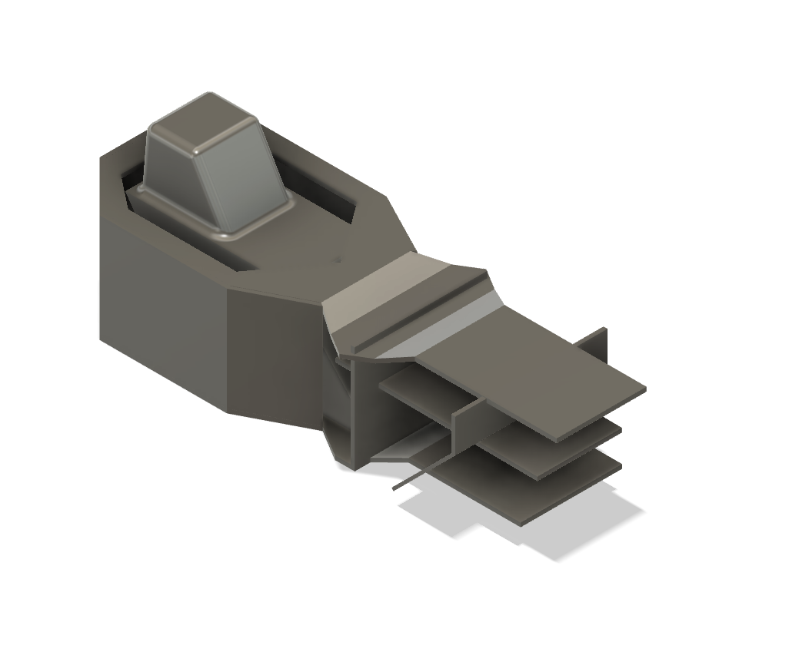
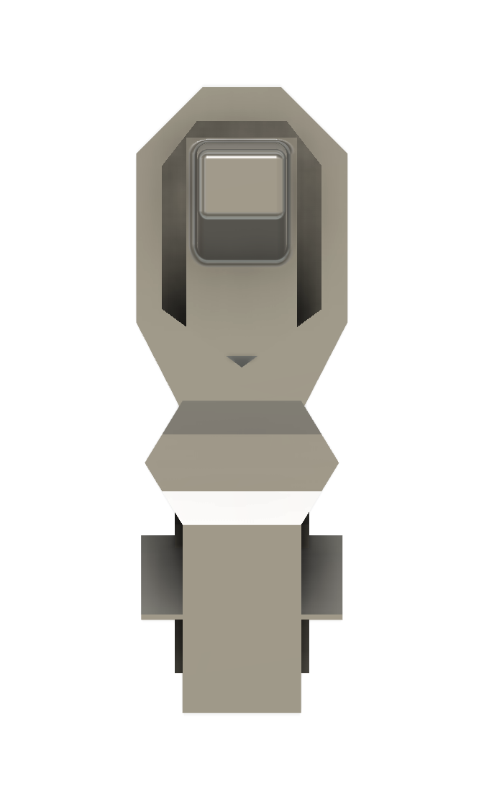
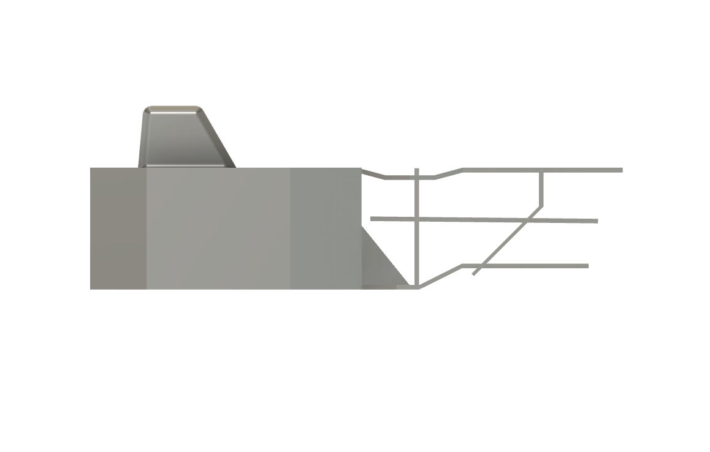

Stanford Solar Car Project
Aerobody design, chassis constraints, and CFD for World Solar Challenge.

Mechanical Engineering • Stanford University
Aeros, mechanisms, and human–device interaction.


About

Stanford Shape Lab researcher
Stanford Solar Car mechanical designer

B.S. Mechanical Engineering
Stanford University
I design and build mechanical systems that live at the intersection of aerodynamics, mechanisms, and haptics. My work spans solar car aerobody design, lever-driven mechanisms, and a multi-LRA wristband for guided handwriting.
I enjoy taking projects from early sketches and CAD to simulation, fabrication, and validation in the lab.
Skills
Projects
Aerobody design, chassis constraints, and CFD for World Solar Challenge.

Weight-driven escapement and cam system for touch-based interaction.

Four-LRA wearable translating pen error into directional cues.

Embedded Snake game on an 8×8 LED matrix with analog joystick input.

Lift–AoA characterization using a subsonic tunnel and load cell.

Analytical, FEA, and physical testing of straight vs. bent designs.

Eight labs in sensing, DIC, signal conditioning, and system ID.

Compact tunnel with honeycomb and acrylic contraction for aero tests.
Case Study

Design an ultra-low-drag aerobody for the Stanford Solar Car that remains stable in crosswinds while meeting visibility, packaging, and carbon-fiber manufacturing constraints for the World Solar Challenge.
Aerobody design and CFD: canopy, diffuser, and underbody refinement; chassis constraint modeling; drag, lift, and yaw performance studies.
Tight WSC size and visibility rules, crosswind stability requirements, realistic carbon-fiber split lines, and reliable CAD→CFD translation for moving-floor simulations.
Parametric surface exploration, moving-floor CFD at 28 m/s, refined boundary layers and y+, and pressure/wake analysis to guide canopy and diffuser geometry.


CFD was used to track drag, lift, and yaw moment while comparing geometry variants.


A 3-wheel chassis model was built to define hardpoints, driver volume, and wheel track limits. This set the envelope the aerobody could wrap around.



Case Study


Create a weight-driven, touch-actuated machine where users trigger one or two bells through a lever, coordinated escapement, and cam system.
Full mechanical design: lever, escapement, drivetrain, frame, and analysis (including FEA-based frame stiffening).
Manage falling-weight power, synchronize escapement and cam profiles, and keep the wooden frame stiff under repeated impacts from the striker.
Built cardboard and wood prototypes, then refined the final CAD. Added an escapement and clutch to control timing and used FEA to reduce deflection at critical joints.


Case Study
Build a wristband that turns handwriting error into real-time directional haptic cues to support accuracy, motor learning, and accessibility.
Hardware and software design across four iterations, web app for error tracking, and vibration pattern design using DRV2605L-driven LRAs.
Achieve clear directional cues with four motors, keep latency < 50 ms from stylus to wrist, and maintain comfort and stability in a small wearable.
Mapped stylus error vectors into motor intensity and activation order, built a low-latency streaming pipeline, and tested motor placement and patterns on the wrist.
A rubber-band linkage between pen and tablet surface created resistance proportional to displacement. It proved that mechanical guidance helps but offered limited control.


Three ERM motors driven by PWM enabled real-time feedback but lacked the strength and bandwidth for crisp directional cues.


A Dayton audio exciter and XY-502 amplifier provided stronger broadband vibration and multi-modal cues but remained non-directional.


The final design uses four LRAs on independent DRV2605L channels to create stroke-like sequences and directional patterns around the wrist.


Improve the wearable form factor, integrate battery and enclosure, and run user studies to quantify stroke accuracy and learning effects.
Add onboard processing, wireless communication, and adaptive feedback models driven by handwriting datasets.
Project

Snake game implemented on an 8×8 LED matrix driven by an Arduino, with an analog joystick controlling direction and speed.
Matrix multiplexing, joystick filtering and dead-zone logic, and Snake game state machine including food spawning and collision detection.


Project
Designed and built a small cambered airfoil and custom stand for a subsonic teaching tunnel in AA 126. The wing was mounted to a load-measurement system using an Adafruit Feather M4 microcontroller, an HX711 24-bit load cell amplifier, and a foil strain gauge in a Wheatstone bridge, with an OLED screen showing live lift readings.
Before tunnel tests, we calibrated the strain-gauge system by applying known weights, recording the corresponding voltage output, and fitting a load–voltage curve to convert the measured signal into aerodynamic force. In the tunnel, we zeroed the system with the wing installed so any decrease in measured load corresponded to lift.


Measured lift was much smaller than expected and did not show a clean linear increase with angle of attack. The small span and chord put the wing at very low Reynolds numbers, so it appeared to stall at low angles. The project highlighted how scale and Reynolds number strongly affect whether classic lift–AoA behavior appears in tunnel data.


Case Study

Compared a straight and a bent ski pole design using analytical Euler buckling calculations, Fusion 360 FEA, and 3D-printed prototypes. The goal was to understand how geometry affects critical buckling load.


Across methods, the straight pole consistently carried a higher critical load than the bent pole. Comparing analysis, FEA, and experiments highlighted the importance of effective length, boundary conditions, and geometric imperfections.
Coursework

A sequence of eight labs covering oscilloscopes, accelerometers, signal conditioning, frequency response, material testing, DIC, and system identification, with an emphasis on calibration, uncertainty, and processing noisy experimental data.
Case Study

Build a compact wind tunnel using an off-the-shelf fan, laser-cut honeycomb, and thermoformed acrylic to create a uniform test section for small aero experiments.
Achieve uniform flow in a short footprint, integrate a consumer fan, and keep all parts easy to manufacture and assemble.
Fan plenum feeding a settling chamber with honeycomb, followed by a contraction, clear test section, and low-angle diffuser to recover static pressure.
Stable, repeatable flow in the test section suitable for smoke visualization and small aerodynamic tests.


Contact
Reach out for internships, collaborations, or questions about any of these projects.
LinkedIn
linkedin.com/in/mari-zampa-580394244
GitHub
github.com/mari-zampa